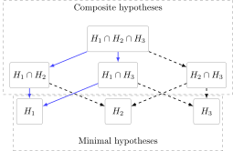

The Art of Influence
A Practical Guide to Working with Influence Functions
Klaus Kähler Holst
Source:vignettes/influencefunction.Rmd
influencefunction.RmdInfluence functions
Estimators that have parametric convergence rates can often be fully
characterized by their influence function (IF), also referred
to as an influence curve or canonical gradient (Bickel et al. 1998; Vaart 1998). The IF allows
for the direct estimation of properties of the estimator, including its
asymptotic variance. Moreover, estimates of the IF enable the simple
combination and transformation of estimators into new ones. This
vignette describes how to estimate and manipulate IFs using the
R-package lava (K. K. Holst and
Budtz-Jørgensen 2013).
Formally, let Z_1,\ldots,Z_n be iid k-dimensional stochastic variables, Z_i=(Y_{i},A_{i},W_{i})\sim P_{0}, and \widehat{\theta} a consistent estimator for the parameter \theta\in\mathbb{R}^p. When \widehat{\theta} is a regular and asymptotic linear (RAL) estimator, it has a unique iid decomposition \begin{align*} \sqrt{n}(\widehat{\theta}-\theta) = \frac{1}{\sqrt{n}}\sum_{i=1}^n \operatorname{IC}(Z_i; P_{0}) + o_{P}(1), \end{align*} where the function \operatorname{IC} is the unique Influence Function s.t. \mathbb{E}\{\operatorname{IC}(Z_{i}; P_{0})\}=0 and \mathbb{V}\!\text{ar}\{\operatorname{IC}(Z_{i}; P_{0})^{2}\}<\infty (Tsiatis 2006; Vaart 1998). The influence function thus fully characterizes the asymptotic behaviour of the estimator and by the central limit theorem it follows that the estimator converges weakly to a Gaussian distribution \sqrt{n}(\widehat{\theta}-\theta) \overset{\mathcal{D}}{\longrightarrow} \mathcal{N}(0, \mathbb{V}\!\text{ar}\{\operatorname{IC}(Z; P_{0})\}), where the empirical variance of the plugin estimator, \mathbb{P}_{n}\operatorname{IC}(Z; \widehat{P})^{\otimes 2} = \frac{1}{n}\sum_{i=1}^n \operatorname{IC}(Z_{i}; \widehat{P})\operatorname{IC}(Z_{i}; \widehat{P})^{\top} can be used to obtain a consistent estimate of the asymptotic variance. Note, in practice the estimate \widehat{P} used in the plugin-estimate, needs only to capture the parts of the distribution of Z that is necessary to evaluate the IF. In some cases this nuisance parameter can be estimated using flexible machine learning components and in other (parametric) cases be derived directly from \widehat{\theta}.
The IFs are easily derived for the parameters of many parametric statistical models as illustrated in the next example sections. More generally, the IF can also be derived for a smooth target parameter \Psi: \mathcal{P}\to\mathbb{R} where \mathcal{P} is a family of probability distributions forming the statistical model, which often can be left completely non-parametric. Formally, the parameter must be pathwise differentiable see (Vaart 1998) in the sense that there exists linear bounded function \dot\Psi\colon L_{2}(P_{0})\to\mathbb{R} such that [\Psi(P_{t}) - \Psi(P_{0}))]t^{-1} \to \dot\Psi(P_{0})(g) as t\to 0 for any parametric submodel P_t with score model g(z)= \partial/(\partial t) \log (p_t)(z)|_{t=0}. Riesz’s representation theorem then tells us that the directional derivative has a unique representer, \phi_{P_{0}} lying in the closure of the submodel score space (the tangent space), s.t. \begin{align*} \dot\Psi(P_0)(g) = \langle\phi_{P_0}, g\rangle = \int \phi_{P_0}(Z)g(X)\,dP_0 \end{align*} The unique representer is exactly the IF which can be found by solving the above integral equation. For more details on how to derive influence functions, we refer to (Laan and Rose 2011; Hines et al. 2022).
As an example we might be interested in the target parameter \Psi(P) = \mathbb{E}_P(Z) which can be shown to have the unique (and thereby efficient) influence function Z\mapsto Z-\mathbb{E}_P(Z) under the non-parametric model. Another target parameter could be \Psi_{a}(P) = \mathbb{E}_{P}[\mathbb{E}_{P}(Y\mid A=a, W)] which is often a key interest in causal inference and which has the IF \begin{align*} \operatorname{IC}(Y,A,W; P) = \frac{\mathbf{1}(A=a)}{\mathbb{P}(A=a\mid W)}(Y-\mathbb{E}_{P}[Y\mid A=a,W]) + \mathbb{E}_{P}[Y\mid A=a,W] - \Psi_{a}(P) \end{align*} See section on average treatment effects.
Working with influence functions with
lava::estimate
The main functions for working with influence functions are
-
estimatewhich prepares a model object and estimates the IF and corresponding robust standard errors. Can also be used to transform model parameters by application of the Delta Theorem. -
mergemethod for combining estimates via their estimated IFs -
IC,coef,vcovmethods to extract the estimated IF, coefficients, and asymptotic covariance matrix -
subsetfor extracting subset of parameters and IFs -
transformmethod for transforming parameter estimates -
labelsfor renaming parameters
The estimate function is the primary tool for obtaining
parameter estimates and related information. It returns an object of the
class type estimate, which is a general container for
holding information about estimated parameters. The estimate function
takes as input either a model object (the first argument
x), or a parameter vector and corresponding influence
function (IF) matrix specified using the coef and
IC arguments. If the primary goal is to apply the delta
method or test linear hypotheses, it is also possible to provide the
asymptotic variance estimate via the vcov argument, without
specifying the IC matrix.
A typical call could look like
merge(subset(estimate(x), 1), estimate(coef=p, IC=ic, id=id)) |> # merge two estimate objects
transform(function(x) c(exp(x), exp(x[1]))) |> # parameter tranfsormation
labels(c("a", "b")) # rename parametersDirect calculations is also possible, if a and
b are estimate objects we can obtain new transformed
parameter estimates with the syntax
with the necessary derivatives exactly calculated automatically. We refer to section IF building blocks for more details.
Examples
To illustrate the methods we consider data arising from the model Y_{ij} \sim Bernoulli\{\operatorname{expit}(X_{ij} + A_{i} + W_{i})\}, A_{i} \sim Bernoulli\{\operatorname{expit}(W_{i})\} with independent covariates X_{ij}\sim\mathcal{N}(0,1), W_{i}\sim\mathcal{N}(0,1).
m <- lvm() |>
regression(y1 ~ x1 + a + w) |>
regression(y2 ~ x2 + a + w) |>
regression(y3 ~ x3 + a + w) |>
regression(y4 ~ x4 + a + w) |>
regression(a ~ w) |>
distribution(~ y1 + y2 + y3 + y4 + a, value = binomial.lvm()) |>
distribution(~id, value = Sequence.lvm(integer = TRUE))We simulate from the model where Y_3 is only observed for half of the subjects
n <- 4e2
dw <- sim(m, n, seed = 1) |>
transform(y3 = y3 * ifelse(id > n / 2, NA, 1))
Print(dw)
#> y1 x1 a w y2 x2 y3 x3 y4 x4 id
#> 1 1 -0.6265 1 1.0744 0 -1.08691 1 -1.5570 1 0.34419 1
#> 2 1 0.1836 1 1.8957 1 -1.82608 1 1.9232 1 0.01272 2
#> 3 0 -0.8356 0 -0.6030 0 0.99528 0 -1.8568 0 -0.87345 3
#> 4 0 1.5953 0 -0.3909 1 -0.01186 0 -2.1061 1 0.34280 4
#> 5 0 0.3295 1 -0.4162 0 -0.59963 1 0.6976 1 -0.17739 5
#> ---
#> 396 0 -0.92431 0 -1.02939 0 -0.30825 NA -1.05037 0 -0.008056 396
#> 397 1 1.59291 1 -0.01093 1 0.01552 NA 1.63787 1 1.033784 397
#> 398 0 0.04501 0 -1.22499 0 -0.44232 NA -1.20733 0 -0.799127 398
#> 399 0 -0.71513 0 -2.59611 0 -1.63801 NA -2.62616 0 1.004233 399
#> 400 1 0.86522 1 1.16912 0 -0.64140 NA 0.01746 1 -0.311973 400
## Data in long format
dl <- reshape(dw,
varying = list(paste0("y",1:4),
paste0("x",1:4)),
v.names=c("y", "x"), direction="long") |>
na.omit()
dl <- dl[order(dl$id), ]
## dl <- mets::fast.reshape(dw, varying = c("y", "x")) |> na.omit()
Print(dl)
#> a w id time y x
#> 1.1 1 1.074 1 1 1 -0.6265
#> 1.2 1 1.074 1 2 0 -1.0869
#> 1.3 1 1.074 1 3 1 -1.5570
#> 1.4 1 1.074 1 4 1 0.3442
#> 2.1 1 1.896 2 1 1 0.1836
#> ---
#> 399.2 0 -2.596 399 2 0 -1.6380
#> 399.4 0 -2.596 399 4 0 1.0042
#> 400.1 1 1.169 400 1 1 0.8652
#> 400.2 1 1.169 400 2 0 -0.6414
#> 400.4 1 1.169 400 4 1 -0.3120Example: population mean
Here we first consider the problem of estimating the IF of the mean. For a general transformation f: \mathbb{R}^k\to\mathbb{R}^p we have that \sqrt{n}\{\mathbb{P}_{n}f(X) - \mathbb{E}[f(X)]\} = \frac{1}{\sqrt{n}}\sum_{i=1}^{n} f(X_{i}) - \mathbb{E}[f(X)] and hence for the problem of estimating the proportion of the binary outcome Y_1, the IF is given by \mathbf{1}(Y_{1}=1) - \mathbb{P}(Y_{1}=1).
To estimate this parameter and its IF we will use the
estimate function
inp <- as.matrix(dw[, c("y1", "y2")])
e <- estimate(inp[, 1, drop = FALSE], type="mean")
class(e)
#> [1] "estimate"
e
#> Estimate Std.Err 2.5% 97.5% P-value
#> y1 0.61 0.02439 0.5622 0.6578 4.435e-138The reported standard errors from the estimate method
are the robust standard errors obtained from the IF. The variance
estimate and the parameters can be extracted with the vcov
and coef methods. The IF itself can be extracted with the
IC (or influence) method:
IC(e) |> Print()
#> y1
#> 1 0.39
#> 2 0.39
#> 3 -0.61
#> 4 -0.61
#> 5 -0.61
#> ---
#> 396 -0.61
#> 397 0.39
#> 398 -0.61
#> 399 -0.61
#> 400 0.39It is also possible to simultaneously estimate the proportions of each of the two binary outcomes
estimate(inp)
#> Estimate Std.Err 2.5% 97.5% P-value
#> y1 0.610 0.02439 0.5622 0.6578 4.435e-138
#> y2 0.535 0.02494 0.4861 0.5839 4.316e-102or alternatively the input can be a model object, here a
mlm object:
e <- lm(cbind(y1, y2) ~ 1, data = dw) |>
estimate()
IC(e) |> head()
#> y1:(Intercept) y2:(Intercept)
#> 1 0.39 -0.535
#> 2 0.39 0.465
#> 3 -0.61 -0.535
#> 4 -0.61 0.465
#> 5 -0.61 -0.535
#> 6 -0.61 0.465Different methods are available for inspecting an
estimate object
summary(e)
#> Call: estimate.default(contrast = as.list(seq_along(p)), vcov = vcov(object,
#> messages = 0), coef = p)
#> ────────────────────────────────────────────────────────────────────────────────
#> Estimate Std.Err 2.5% 97.5% P-value
#> [y1:(Intercept)] 0.610 0.02439 0.5622 0.6578 4.435e-138
#> [y2:(Intercept)] 0.535 0.02494 0.4861 0.5839 4.316e-102
#>
#> Null Hypothesis:
#> [y1:(Intercept)] = 0
#> [y2:(Intercept)] = 0
#>
#> chisq = 955.6986, df = 2, p-value < 2.2e-16
## extract parameter coefficients
coef(e)
#> y1:(Intercept) y2:(Intercept)
#> 0.610 0.535
## ## Asymptotic (robust) variance estimate
vcov(e)
#> y1:(Intercept) y2:(Intercept)
#> y1:(Intercept) 5.9475e-04 0.0000841250
#> y2:(Intercept) 8.4125e-05 0.0006219375
## Matrix with estimates and confidence limits
estimate(e, level = 0.99) |> parameter()
#> Estimate Std.Err 0.5% 99.5% P-value
#> y1:(Intercept) 0.610 0.02438750 0.5471820 0.6728180 4.434692e-138
#> y2:(Intercept) 0.535 0.02493867 0.4707622 0.5992378 4.316104e-102
## Influence curve
IC(e) |> head()
#> y1:(Intercept) y2:(Intercept)
#> 1 0.39 -0.535
#> 2 0.39 0.465
#> 3 -0.61 -0.535
#> 4 -0.61 0.465
#> 5 -0.61 -0.535
#> 6 -0.61 0.465
## Join estimates
merge(e, e)
#> Estimate Std.Err 2.5% 97.5% P-value
#> y1:(Intercept) 0.610 0.02439 0.5622 0.6578 4.435e-138
#> y2:(Intercept) 0.535 0.02494 0.4861 0.5839 4.316e-102
#> ────────────────
#> y1:(Intercept).1 0.610 0.02439 0.5622 0.6578 4.435e-138
#> y2:(Intercept).1 0.535 0.02494 0.4861 0.5839 4.316e-102Example: generalized linear model
For a Z-estimator defined by the score equation E[U(Z; \theta)] = 0, the IF is given by \begin{align*} IC(Z; \theta) = -\mathbb{E}\Big\{\frac{\partial}{\partial\theta^\top}U(\theta; Z)\Big\}^{-1}U(Z; \theta) \end{align*} In particular, for a maximum likelihood estimator the score, U, is given by the partial derivative of the log-likelihood function.
As an example, we can obtain the estimates with robust standard errors for a logistic regression model:
g <- glm(y1 ~ a + x1, data = dw, family = binomial)
estimate(g)
#> Estimate Std.Err 2.5% 97.5% P-value
#> (Intercept) -0.2687 0.1622 -0.5867 0.04931 9.772e-02
#> a 1.5595 0.2428 1.0835 2.03545 1.348e-10
#> x1 0.9728 0.1435 0.6916 1.25397 1.198e-11We can compare that to the usual (non-robust) standard errors:
estimate(g, robust = FALSE)
#> Estimate Std.Err 2.5% 97.5% P-value
#> (Intercept) -0.2687 0.1589 -0.5802 0.04281 9.091e-02
#> a 1.5595 0.2423 1.0846 2.03433 1.220e-10
#> x1 0.9728 0.1396 0.6992 1.24634 3.177e-12The IF can be extracted from the estimate object or
directly from the model object
IC(g) |> head()
#> (Intercept) a x1
#> 1 0.09816353 3.715892 -0.8478763
#> 2 -0.08203584 2.562573 0.7085752
#> 3 -2.74896196 3.316937 1.8772112
#> 4 -6.78328520 4.052090 -9.0268560
#> 5 0.47533946 -11.818085 -4.1056905
#> 6 -2.77584564 3.340948 1.8677174The same estimates can be obtained with a cumulative link regression model which also generalizes to ordinal outcomes. Here we consider the proportional odds model given by \begin{align*} \log\left(\frac{\mathbb{P}(Y\leq j\mid x)}{1-\mathbb{P}(Y\leq j\mid x)}\right) = \alpha_{j} + \beta^{t}x, \quad j=1,\ldots,J \end{align*}
ordreg(y1 ~ a + x1, dw, family=binomial(logit)) |> estimate()
#> Estimate Std.Err 2.5% 97.5% P-value
#> 0|1 0.2687 0.1622 -0.04932 0.5867 9.772e-02
#> a 1.5595 0.2429 1.08349 2.0355 1.350e-10
#> x1 0.9728 0.1435 0.69157 1.2540 1.200e-11Note that the sandwich::estfun function from the
sandwich library (Zeileis, Köll, and
Graham 2020) can also estimate the IF for different parametric
models, but does not provide the tools for combining and transforming
these.
Example: right-censored outcomess
To illustrate the methods on survival data we will use the Mayo Clinic Primary Biliary Cholangitis Data (Therneau and Grambsch 2000)
library("survival")
data(pbc, package="survival")The Cox proportional hazards model can be fitted with the
mets::phreg method which can estimate the IF for both the
partial likelihood parameters and the baseline hazard. Here we fit a
survival model with right-censored event times
fit.phreg <- mets::phreg(Surv(time, status > 0) ~ age + sex, data = pbc)
fit.phreg
#> Call:
#> mets::phreg(formula = Surv(time, status > 0) ~ age + sex, data = pbc)
#>
#> n events
#> 418 186
#> coeffients:
#> Estimate S.E. dU^-1/2 P-value
#> age 0.0220977 0.0070372 0.0072712 0.0017
#> sexf -0.2999507 0.2022144 0.2097533 0.1380
#>
#> exp(coeffients):
#> Estimate 2.5% 97.5%
#> age 1.02234 1.00834 1.0365
#> sexf 0.74085 0.49843 1.1012
IC(fit.phreg) |> head()
#> age sexf
#> [1,] 0.12691175 2.9551968
#> [2,] -0.16011629 -4.3755455
#> [3,] 0.19322595 -8.1786480
#> [4,] 0.04668109 0.8548021
#> [5,] -0.22936186 0.9721761
#> [6,] 0.07015171 0.5644414The IF for the baseline cumulative hazard at a specific time point \begin{align*} \Lambda_0(t) = \int_0^t \lambda_0(u)\,du, \end{align*} where \lambda_0(t) is the baseline hazard, can be estimated in similar way:
baseline <- function(object, time, ...) {
ic <- mets::IC(object, baseline = TRUE, time = time, ...)
est <- mets::predictCumhaz(object$cumhaz, new.time = time)[1, 2]
estimate(NULL, coef = est, IC = ic, labels = paste0("chaz:", time))
}
tt <- 2000
baseline(fit.phreg, tt)
#> Estimate Std.Err 2.5% 97.5% P-value
#> chaz:2000 0.178 0.07597 0.02913 0.3269 0.01911The estimate and IF methods are also
available for parametric survival models via
survival::survreg, here a Weibull model:
survival::survreg(Surv(time, status > 0) ~ age + sex, data = pbc, dist="weibull") |>
estimate()
#> Estimate Std.Err 2.5% 97.5% P-value
#> (Intercept) 9.02697 0.382437 8.27741 9.776530 3.521e-123
#> age -0.01919 0.006362 -0.03166 -0.006723 2.554e-03
#> sexf 0.28170 0.174338 -0.06000 0.623392 1.061e-01
#> scale 0.87751 0.070693 0.73896 1.016067 2.220e-35Example: random effects model / structural equation model
General structural equation models (SEMs) can be estimated with
lava::lvm. Here we fit a random effects probit model
\mathbb{P}(Y_{ij} = 1 \mid U_{i}, W_{ij})=\Phi(\mu_{j} + \beta_{j}
W_{ij} + U_{i}), \quad U_{i}\sim\mathcal{N}(0,\sigma_{u}^{2}),\quad
j=1,2
to the simulated dataset
sem <- lvm(y1 + y2 ~ 1 * u + w) |>
latent(~ u) |>
ordinal(K=2, ~ y1 + y2)
semfit <- estimate(sem, data = dw)
## Robust standard errors
estimate(semfit)
#> Estimate Std.Err 2.5% 97.5% P-value
#> y2 -0.21037 0.09391 -0.3944 -0.02630 2.509e-02
#> u 0.36025 0.06659 0.2297 0.49075 6.295e-08
#> y1~w 0.55425 0.06930 0.4184 0.69008 1.272e-15
#> y2~w 0.59388 0.07510 0.4467 0.74108 2.623e-15
#> u~~u -0.09496 0.07360 -0.2392 0.04929 1.970e-01Example: quantile
Let \beta denote the \tauth quantile of X, with IF \begin{align*} \operatorname{IC}(x; P_{0}) = \tau - \mathbf{1}(x\leq \beta)f_{0}(\beta)^{-1} \end{align*}
where f_{0} is the density function of X.
To calculate the variance estimate, an estimate of the density is
thus needed which can be obtained by a kernel estimate. Alternatively,
the resampling method of (Zeng and Lin
2008) can be applied. Here we use a kernel smoother (additional
arguments to the estimate function are parsed on to
stats::density.default) to estimate the quantiles and IF
for the 25%, 50%, and 75% quantiles of W and X_1
eq <- estimate(dw[, c("w", "x1")], type = "quantile", probs = c(0.25, 0.5, 0.75))
eq
#> Estimate Std.Err 2.5% 97.5% P-value
#> w.25% -0.81214 0.07277 -0.9548 -0.66951 6.390e-29
#> w.50% -0.11062 0.07201 -0.2518 0.03052 1.245e-01
#> w.75% 0.67716 0.07784 0.5246 0.82973 3.353e-18
#> x1.25% -0.57510 0.06340 -0.6994 -0.45084 1.177e-19
#> x1.50% -0.02664 0.06078 -0.1458 0.09249 6.611e-01
#> x1.75% 0.69590 0.06696 0.5647 0.82715 2.683e-25
IC(eq) |> head()
#> w.25% w.50% w.75% x1.25% x1.50% x1.75%
#> [1,] 0.8402973 1.440254 2.6966215 -2.196201 -1.215663 -0.7732142
#> [2,] 0.8402973 1.440254 2.6966215 0.732067 1.215663 -0.7732142
#> [3,] 0.8402973 -1.440254 -0.8988738 -2.196201 -1.215663 -0.7732142
#> [4,] 0.8402973 -1.440254 -0.8988738 0.732067 1.215663 2.3196427
#> [5,] 0.8402973 -1.440254 -0.8988738 0.732067 1.215663 -0.7732142
#> [6,] 0.8402973 -1.440254 -0.8988738 -2.196201 -1.215663 -0.7732142Combining influence functions
A key benefit of working with the IFs of estimators is that this allows for transforming or combining different estimates while easily deriving the resulting IF and thereby asymptotic distribution of the new estimator.
Let \widehat{\theta}_{1}, \ldots, \widehat{\theta}_{M} be M different estimators with decompositions \begin{align*} \sqrt{n}(\widehat{\theta}_{m}-\theta_{m}) = \frac{1}{\sqrt{n}}\sum_{i=1}^{n} \operatorname{IC}_m(Z_i; P_{0}) + o_{P}(1) \end{align*} based on iid data Z_1,\ldots,Z_n. It then follows immediately (Vaart 1998 Theorem 18.10[vi]) that the joint distribution of $ - {}= ({1}{},,{M}{})- ({}{1}{},,{}{M}{}) $ is given by \begin{align*} \sqrt{n}(\widehat{\theta}-\theta) &= \frac{1}{\sqrt{n}}\sum_{i=1}^{n} \underbrace{[\operatorname{IC}_{1}(Z_i; P_{0})^\top,\ldots,\operatorname{IC}_{M}(Z_i; P_{0})^\top]^{\top}}_{\overline{\operatorname{IC}}(Z_i; P_{0})} + o_{P}(1) \\ &\overset{\mathcal{D}}{\longrightarrow}\mathcal{N}(0,\Sigma) \end{align*} by the CLT, and under regulatory conditions \mathbb{P}_{n}\overline{\operatorname{IC}}(Z_i; \widehat{P})^{\otimes 2} \overset{P}{\longrightarrow}\Sigma as n\to\infty.
To illustrate this we consider two marginal logistic regression
models fitted separately for Y_1 and
Y_2 and combine the estimates and IFs
using the merge method
g1 <- glm(y1 ~ a, family=binomial, data=dw)
g2 <- glm(y2 ~ a, family=binomial, data=dw)
e <- merge(g1, g2)
summary(e)
#> Call: estimate.default(contrast = as.list(seq_along(p)), vcov = vcov(object,
#> messages = 0), coef = p)
#> ────────────────────────────────────────────────────────────────────────────────
#> Estimate Std.Err 2.5% 97.5% P-value
#> [(Intercept)] -0.1861 0.1442 -0.4688 0.09655 1.969e-01
#> [a] 1.3239 0.2173 0.8981 1.74978 1.105e-09
#> [(Intercept).1] -0.6168 0.1505 -0.9117 -0.32185 4.152e-05
#> [a.1] 1.5060 0.2148 1.0849 1.92712 2.385e-12
#>
#> Null Hypothesis:
#> [(Intercept)] = 0
#> [a] = 0
#> [(Intercept).1] = 0
#> [a.1] = 0
#>
#> chisq = 96.4362, df = 4, p-value < 2.2e-16As we have access to the joint asymptotic distribution we can for example test for whether the odds-ratio is the same for the two responses:
estimate(e, cbind(0,1,0,-1), null=0)
#> Estimate Std.Err 2.5% 97.5% P-value
#> [a] - [a.1] -0.1821 0.3003 -0.7707 0.4065 0.5443
#>
#> Null Hypothesis:
#> [a] - [a.1] = 0More details an be found in the Section on hypothesis testing.
Imbalanced data
Let O_{1} = (Z_{1}R_{1}, R_{1}), \ldots, O_{N}=(Z_{N}R_{N}, R_{N}) be iid with R_{i}\!\perp\!\!\!\!\perp\!Z_i and let the full-data IF for some estimator of a parameter \theta\in\mathbb{R}^p be IC(\cdot; P_{0}). For convenience let the data be ordered R_{i}=\mathbf{1}(i\leq n) where n is the number of observed data points, then the complete-case estimator is consistent and based on same IF
\begin{align*} \sqrt{n}(\widehat{\theta}-\theta) = \frac{1}{\sqrt{n}}\sum_{i=1}^n IC(Z_i; P_{0}) + o_{P}(1). \end{align*}
This estimator can also be decomposed in terms of the observed data O_1,\ldots,O_N noting that
\begin{align*} \sqrt{N}(\widehat{\theta}-\theta) = \frac{1}{\sqrt{N}}\sum_{i=1}^N IC(Z_i; P)\frac{R_i N}{n} + o_{P}(1). \end{align*}
where the term \frac{R_i N}{n} corresponds to an inverse probability weighting with the empirical plugin estimate of the proportion of observed data R=1. Under a missing completely at random assumption we can therefore combine estimators that are estimated on different datasets. Let the observed data be (Z_{11}R_{11}, R_{11}, Z_{21}R_{21}, R_{21}), \ldots, (Z_{1N}R_{1N}, R_{1N}, Z_{2N}R_{2N}, R_{2N})) with complete-case estimators \widehat{\theta}_1 and \widehat{\theta}_2 for parameters \theta_1 and \theta_2 based on (Z_{11}R_{11}, \ldots, Z_{1N}R_{1N}) and (Z_{21}R_{21}, \ldots, Z_{2N}R_{2N}), respectively, and let the corresponding IFs be IC_{1}(\cdot; P_{0}) and IC_{2}(\cdot;\ P). It then follows that
\begin{align*} \sqrt{N}\left\{ \begin{pmatrix} \widehat{\theta}_1 \\ \widehat{\theta}_2 \end{pmatrix} - \begin{pmatrix} \vphantom{\widehat{\theta}_1}\theta_1 \\ \vphantom{\widehat{\theta}_1}\theta_2 \end{pmatrix} \right\} = \frac{1}{\sqrt{N}}\sum_{i=1}^N \begin{pmatrix} IC_1(Z_{1i}; P_{0})\frac{R_{1i}N}{R_{1\bullet}} \\ IC_2(Z_{2i}; P_{0})\frac{R_{2i}N}{R_{2\bullet}} \end{pmatrix} + o_{P}(1) \end{align*}
with R_{k\bullet} =
\sum_{i=1}^{N}R_{ki}. Returning to the example, we can combine
the marginal estimates of two model objects that have been estimated
from different datasets (as the outcome Y_3 is only available in half of the data)
with the merge function
g2 <- glm(y2 ~ 1, family = binomial, data = dw)
summary(g2)
#>
#> Call:
#> glm(formula = y2 ~ 1, family = binomial, data = dw)
#>
#> Coefficients:
#> Estimate Std. Error z value Pr(>|z|)
#> (Intercept) 0.1402 0.1002 1.399 0.162
#>
#> (Dispersion parameter for binomial family taken to be 1)
#>
#> Null deviance: 552.56 on 399 degrees of freedom
#> Residual deviance: 552.56 on 399 degrees of freedom
#> AIC: 554.56
#>
#> Number of Fisher Scoring iterations: 3
dwc <- na.omit(dw)
g3 <- glm(y3 ~ 1, family = binomial, data = dwc)
summary(g3)
#>
#> Call:
#> glm(formula = y3 ~ 1, family = binomial, data = dwc)
#>
#> Coefficients:
#> Estimate Std. Error z value Pr(>|z|)
#> (Intercept) 0.2615 0.1426 1.833 0.0668 .
#> ---
#> Signif. codes: 0 '***' 0.001 '**' 0.01 '*' 0.05 '.' 0.1 ' ' 1
#>
#> (Dispersion parameter for binomial family taken to be 1)
#>
#> Null deviance: 273.87 on 199 degrees of freedom
#> Residual deviance: 273.87 on 199 degrees of freedom
#> AIC: 275.87
#>
#> Number of Fisher Scoring iterations: 3
e2 <- estimate(g2, id = dw$id)
e3 <- estimate(g3, id = "id", data=dwc)
ecomb <- merge(e2, e3)
IC(ecomb) |> Print()
#> (Intercept) (Intercept).1
#> 1 -2.151 3.540
#> 2 1.869 3.540
#> 3 -2.151 -4.598
#> 4 1.869 -4.598
#> 5 -2.151 3.540
#> ---
#> 396 -2.151 0.000
#> 397 1.869 0.000
#> 398 -2.151 0.000
#> 399 -2.151 0.000
#> 400 -2.151 0.000
vcov(ecomb)
#> (Intercept) (Intercept).1
#> (Intercept) 0.010049191 0.002102598
#> (Intercept).1 0.002102598 0.020342639
## Same marginals as
list(vcov(e2), vcov(e3))
#> [[1]]
#> (Intercept)
#> (Intercept) 0.01004919
#>
#> [[2]]
#> (Intercept)
#> (Intercept) 0.02034264Note, it is also possible to directly specify the id-variables in the
merge call:
merge(e2, e3, id = list(dw$id, dwc$id))
#> Estimate Std.Err 2.5% 97.5% P-value
#> (Intercept) 0.1402 0.1002 -0.05625 0.3367 0.16186
#> ─────────────
#> (Intercept).1 0.2615 0.1426 -0.01807 0.5410 0.06676In the above example the id argument defines the
identifier that makes it possible to link the rows in the different IFs
that should be glued together. If omitted then the id will
automatically be extracted from the model-specific IC
method (deriving it from the original data.frame used for estimating the
model). This automatically works with all models and IC
methods described in this document.
estimate(g2) |>
IC() |> head()
#> (Intercept)
#> 1 -2.150532
#> 2 1.869154
#> 3 -2.150532
#> 4 1.869154
#> 5 -2.150532
#> 6 1.869154
vcov(merge(estimate(g2), estimate(g3)))
#> (Intercept) (Intercept).1
#> (Intercept) 0.010049191 0.002102598
#> (Intercept).1 0.002102598 0.020342639
merge(estimate(g2), estimate(g3)) |>
(rownames %++% head %++% IC)()
#> [1] "1" "10" "100" "101" "102" "103"To force that the id variables are not overlapping between the merged
model objects, i.e., assuming that there is complete independence
between the estimates, the argument id=NULL can be used
merge(g1, g2, id = NULL) |> (Print %++% IC)()
#> (Intercept) a (Intercept).1
#> 1 1.104e-15 5.128e+00 0.000e+00
#> 2 1.104e-15 5.128e+00 0.000e+00
#> 3 -7.547e+00 7.547e+00 0.000e+00
#> 4 -7.547e+00 7.547e+00 0.000e+00
#> 5 -2.200e-15 -1.600e+01 0.000e+00
#> ---
#> 796 0.000 0.000 3.738
#> 797 0.000 0.000 3.738
#> 798 0.000 0.000 -4.301
#> 799 0.000 0.000 -4.301
#> 800 0.000 0.000 -4.301
merge(g1, g2, id = NULL) |> vcov()
#> (Intercept) a (Intercept).1
#> (Intercept) 2.079760e-02 -2.079760e-02 -1.600942e-29
#> a -2.079760e-02 4.720777e-02 -1.554863e-25
#> (Intercept).1 -1.600942e-29 -1.554863e-25 1.004919e-02Renaming and subsetting parameters
To only keep a subset of the parameters the keep
argument can be used.
merge(g1, g2, keep = c("(Intercept)", "(Intercept).1"))
#> Estimate Std.Err 2.5% 97.5% P-value
#> (Intercept) -0.1861 0.1442 -0.46876 0.09655 0.1969
#> (Intercept).1 0.1402 0.1002 -0.05625 0.33671 0.1619The argument can be given either as character vector or a vector of indices:
merge(g1, g2, keep=c(1, 3))
#> Estimate Std.Err 2.5% 97.5% P-value
#> (Intercept) -0.1861 0.1442 -0.46876 0.09655 0.1969
#> (Intercept).1 0.1402 0.1002 -0.05625 0.33671 0.1619or as a vector of perl-style regular expressions
merge(g1, g2, keep = "cept", regex = TRUE)
#> Estimate Std.Err 2.5% 97.5% P-value
#> (Intercept) -0.1861 0.1442 -0.46876 0.09655 0.1969
#> (Intercept).1 0.1402 0.1002 -0.05625 0.33671 0.1619
merge(g1, g2, keep = c("\\)$", "^a$"), regex = TRUE, ignore.case = TRUE)
#> Estimate Std.Err 2.5% 97.5% P-value
#> (Intercept) -0.1861 0.1442 -0.4688 0.09655 1.969e-01
#> a 1.3239 0.2173 0.8981 1.74978 1.105e-09When merging estimates unique parameter names are created. It is also
possible to rename the parameters with the labels
argument
merge(g1, g2, labels = c("a", "b", "c")) |> estimate(keep = c("a", "c"))
#> Estimate Std.Err 2.5% 97.5% P-value
#> a -0.1861 0.1442 -0.46876 0.09655 0.1969
#> c 0.1402 0.1002 -0.05625 0.33671 0.1619
merge(g1, g2,
labels = c("a", "b", "c"),
keep = c("a", "c")
)
#> Estimate Std.Err 2.5% 97.5% P-value
#> a -0.1861 0.1442 -0.46876 0.09655 0.1969
#> c 0.1402 0.1002 -0.05625 0.33671 0.1619
estimate(g1, labels=c("a", "b"))
#> Estimate Std.Err 2.5% 97.5% P-value
#> a -0.1861 0.1442 -0.4688 0.09655 1.969e-01
#> b 1.3239 0.2173 0.8981 1.74978 1.105e-09Finally, the subset argument can be used to subset the
parameters and IFs before the actual merging is being done
merge(g1, g2, subset="(Intercept)")
#> Estimate Std.Err 2.5% 97.5% P-value
#> (Intercept) -0.1861 0.1442 -0.46876 0.09655 0.1969
#> ─────────────
#> (Intercept).1 0.1402 0.1002 -0.05625 0.33671 0.1619Clustered data (non-iid case)
Let Z_i = (Z_{i1},\ldots,Z_{iN_{i}}) and assume that (Z_{i}, N_{i}) \sim P, i=1,\ldots,n are iid and N_i\!\perp\!\!\!\!\perp\!Z_{ij}. The variables Z_{i1},\ldots,Z_{iN_{i}} we assume are exchangeable but not necessarily independent. Define N = \sum_{i=1}^{n} N_i, and assume that a parameter estimate, \widehat{\theta}\in\mathbb{R}^p has the decomposition \sqrt{N}(\widehat{\theta}-\theta) = \frac{1}{\sqrt{N}} \sum_{i=1}^{n} \sum_{k=1}^{N_{i}} IC(Z_{ik}; P_{0}) + o_{P}(1). It then follows that \sqrt{n}(\widehat{\theta}-\theta) = \frac{1}{\sqrt{n}} \sum_{i=1}^{n} \widetilde{\operatorname{IC}}(Z_{i}; P_{0}) + o_{P}(1) with \widetilde{\operatorname{IC}}(Z_{i}; P_{0}) = \sum_{k=1}^{N_{i}} \frac{n}{N}IC(Z_{ik}; P_{0}), i=1,\ldots,n which are iid an therefore admits the usual CLT to derive the asymptotic variance of \widehat{\theta}. Turning back to the example data, we can estimate the marginal model
The asymptotic variance estimate ignoring that the observations are not independent is not consistent. Instead we can calculate the cluster robust standard errors from the above iid decomposition
estimate(g0, id=dl$id)
#> Estimate Std.Err 2.5% 97.5% P-value
#> (Intercept) -0.1147 0.09351 -0.2979 0.06862 2.201e-01
#> a 1.0178 0.13016 0.7627 1.27288 5.303e-15
#> w 0.9825 0.07421 0.8370 1.12791 5.278e-40
#> x 0.9485 0.07835 0.7949 1.10203 9.976e-34We can confirm that this situation is equivalent to the variance estimates we obtain from a GEE marginal model with working independence correlation structure (Halekoh, Højsgaard, and Yan 2006)
gee0 <- geepack::geeglm(y ~ a + w + x, data = dl, id = dl$id, family=binomial)
summary(gee0)
#>
#> Call:
#> geepack::geeglm(formula = y ~ a + w + x, family = binomial, data = dl,
#> id = dl$id)
#>
#> Coefficients:
#> Estimate Std.err Wald Pr(>|W|)
#> (Intercept) -0.11466 0.09351 1.504 0.22
#> a 1.01777 0.13016 61.145 5.33e-15 ***
#> w 0.98246 0.07421 175.250 < 2e-16 ***
#> x 0.94845 0.07835 146.523 < 2e-16 ***
#> ---
#> Signif. codes: 0 '***' 0.001 '**' 0.01 '*' 0.05 '.' 0.1 ' ' 1
#>
#> Correlation structure = independence
#> Estimated Scale Parameters:
#>
#> Estimate Std.err
#> (Intercept) 0.9538 0.098
#> Number of clusters: 400 Maximum cluster size: 4Computational aspects
Working with large and potentially multiple different IFs can be memory-intensive. A remedy is to use the idea of aggregating the IFs by introducing a random coarser grouping variable. Following the same arguments as in the previous section, the aggregated IF will still be iid and allows us to estimate the asymptotic variance. Obviously, the same grouping must be used across estimates when combining IFs.
set.seed(1)
y <- cbind(rnorm(1e5))
N <- 2e2 ## Number of aggregated groups, the number of observations in the new IF
id <- foldr(nrow(y), N, list=FALSE)
Print(cbind(table(id)))
#> [,1]
#> 1 500
#> 2 500
#> 3 500
#> 4 500
#> 5 500
#> ---
#> 196 500
#> 197 500
#> 198 500
#> 199 500
#> 200 500
## Aggregated IF
e <- estimate(cbind(y), id = id)
object.size(e)
#> 18992 bytes
e
#> Estimate Std.Err 2.5% 97.5% P-value
#> p1 -0.002244 0.00332 -0.008751 0.004263 0.4991IF building blocks: transformations and the delta theorem
Let \phi\colon \mathbb{R}^p\to\mathbb{R}^m be differentiable at \theta and assume that \widehat{\theta}_n is RAL estimator with IF given by \operatorname{IC}(\cdot; P_{0}) such that \begin{align*} \sqrt{n}(\widehat{\theta}_n - \theta) = \frac{1}{\sqrt{n}}\sum_{i=1}^n \operatorname{IC}(Z_i; P_{0}) + o_{P}(1), \end{align*} then by the delta method (Vaart 1998 Theorem 3.1) \begin{align*} \sqrt{n}\{\phi(\widehat{\theta}_n) - \phi(\theta)\} = \frac{1}{\sqrt{n}}\sum_{i=1}^n \nabla\phi(\theta)\operatorname{IC}(Z_i; P_{0}) + o_{P}(1), \end{align*}
where \phi\colon \theta\mapsto (\phi_{1}(\theta),\ldots,\phi_{m}(\theta))^\top and \nabla is the partial derivative operator \begin{align*} \nabla\phi(\theta) = \begin{pmatrix} \tfrac{\partial}{\partial\theta_1}\phi_1(\theta) & \cdots & \tfrac{\partial}{\partial\theta_p}\phi_1(\theta) \\ \vdots & \ddots & \vdots \\ \tfrac{\partial}{\partial\theta_1}\phi_m(\theta) & \cdots & \tfrac{\partial}{\partial\theta_p}\phi_m(\theta) \\ \end{pmatrix}. \end{align*}
Together with the ability to derive the joint IF from marginal IFs, this provides us with a powerful tool for constructing new estimates using the IFs as the fundamental building blocks.
To apply the delta method the transformation of the parameters
function must be supplied to the estimate method (argument
f)
estimate(g1, sum)
#> Estimate Std.Err 2.5% 97.5% P-value
#> p1 1.138 0.1625 0.8193 1.456 2.532e-12
estimate(g1, function(p) list(a = sum(p))) # named list
#> Estimate Std.Err 2.5% 97.5% P-value
#> a 1.138 0.1625 0.8193 1.456 2.532e-12
## Multiple parameters
estimate(g1, function(x) c(x, x[1] + exp(x[2]), inv = 1 / x[2]))
#> Estimate Std.Err 2.5% 97.5% P-value
#> (Intercept) -0.1861 0.1442 -0.4688 0.09655 1.969e-01
#> a 1.3239 0.2173 0.8981 1.74978 1.105e-09
#> (Intercept).1 3.5721 0.7289 2.1435 5.00062 9.539e-07
#> inv.a 0.7553 0.1240 0.5124 0.99828 1.105e-09
estimate(g1, exp)
#> Estimate Std.Err 2.5% 97.5% P-value
#> (Intercept) 0.8302 0.1197 0.5955 1.065 4.087e-12
#> a 3.7582 0.8166 2.1578 5.359 4.175e-06The gradient can be provided as the attribute grad and
otherwise numerical differentiation is applied.
An often more convenient syntax is to directly transform the
estimate objects via standard mathematical R operations. An
advantage of this is also that the necessary derivatives are
automatically calculated exactly. To illustrate this consider the
following simple example where we consider two estimate
objects each with a single parameter estimate
a <- estimate(coef=c("a"=0.5), IC=rnorm(10), id=1:10)
b <- estimate(coef=c("b"=0.8), IC=rnorm(10), id=1:10)Parameter transformation can now be calculated directly as in the following examples
a * b
#> Estimate Std.Err 2.5% 97.5% P-value
#> a 0.4 0.2741 -0.1372 0.9372 0.1445
(3 * cos(a) / sqrt(b) + 1) / a
#> Estimate Std.Err 2.5% 97.5% P-value
#> a 7.887 5.283 -2.467 18.24 0.1354
c(sum=sum(e), sum2=a+b,
prod=prod(e), prod2=a*b) # sum and prod function
#> Estimate Std.Err 2.5% 97.5% P-value
#> sum -0.002244 0.00332 -0.008751 0.004263 0.4991
#> ─────
#> sum2 1.300000 0.56369 0.195179 2.404821 0.0211
#> ─────
#> prod -0.002244 0.00332 -0.008751 0.004263 0.4991
#> ─────
#> prod2 0.400000 0.36223 -0.309967 1.109967 0.2695
e <- c(a,b) # merge
e %*% e # inner prod.
#> Estimate Std.Err 2.5% 97.5% P-value
#> p1 0.89 0.5491 -0.1863 1.966 0.1051
c(1, 2) %*% e
#> Estimate Std.Err 2.5% 97.5% P-value
#> p1 2.1 0.6439 0.8379 3.362 0.00111
c(pow = a^b) # power-function, rename parameter
#> Estimate Std.Err 2.5% 97.5% P-value
#> pow 0.5743 0.2335 0.1167 1.032 0.01391
a^c(0.5, 2)
#> Estimate Std.Err 2.5% 97.5% P-value
#> p1 0.7071 0.1840 0.3465 1.0677 0.0001212
#> p2 0.2500 0.2602 -0.2599 0.7599 0.3365994
c(e["a"] * e["b"] / a, e["b"])
#> Estimate Std.Err 2.5% 97.5% P-value
#> a 0.8 0.2614 0.2876 1.312 0.002212
#> ─
#> b 0.8 0.2614 0.2876 1.312 0.002212For the %*%* operator we can also use a general contrast
matrix (see also Section on Linear contrasts
B <- rbind(c(1,-1), c(1,0), c(0,1))
B %*% e
#> Estimate Std.Err 2.5% 97.5% P-value
#> [a] - [b] -0.3 0.3150 -0.917403 0.3174 0.340915
#> [a] 0.5 0.2602 -0.009926 1.0099 0.054629
#> [b] 0.8 0.2614 0.287617 1.3124 0.002212
#>
#> Null Hypothesis:
#> [a] - [b] = 0
#> [a] = 0
#> [b] = 0
#>
#> chisq = 10.66, df = 2, p-value = 0.004855The following transformations are implemented
- trigonometric functions:
cos,sin,tan - inverse trigonometric functions:
acos,asin,atan - hyperbolic functions:
cosh,sinh,tanh - inverse hyperbolic functions:
acosh,asinh,atanh - other mathematical functions:
log,log1p,exp,expm1,sqrt - mathematical operators:
+,-,*,/,^,prod,sum,%*%
and any compositions of these functions, which also means we can
immediately apply most existing user-defined functions. To give an
example consider the logit function
lava::logit
#> function (p)
#> log(p/(1 - p))
#> <bytecode: 0x5648d6b6f0c0>
#> <environment: namespace:lava>
logit(b)
#> Estimate Std.Err 2.5% 97.5% P-value
#> b 1.386 1.634 -1.816 4.589 0.3962
expit(c(a,b))
#> Estimate Std.Err 2.5% 97.5% P-value
#> a 0.6225 0.06114 0.5026 0.7423 2.418e-24
#> b 0.6900 0.05592 0.5804 0.7996 5.632e-35In the above example we also demonstrated the user of the subset
operator [] and the merge method c(). These
are basically equivalent to the subset and
merge methods. There is also a transform
method for constructing parameter transformations above, and the
labels function for renaming parameters. Together we can
combine these methods via the pipe operator to create readable code:
merge(a, b) |> # merges the two `estimate` objects
transform(prod) |> # calculates product of parameter estimates
subset(1) |> # nothing happens here as the result was already 1-dim.
labels("prod") # rename parameter
#> Estimate Std.Err 2.5% 97.5% P-value
#> prod 0.4 0.2741 -0.1372 0.9372 0.1445Finally, the with function can be used to reference
parameter names
e <- c("e1"=a, "e2"=b)
with(e, c(est = e1*e2))
#> Estimate Std.Err 2.5% 97.5% P-value
#> est 0.4 0.2741 -0.1372 0.9372 0.1445Example: Pearson correlation
As a simple toy example consider the problem of estimating the covariance of two variables X_1 and X_2 \begin{align*} \widehat{\mathbb{C}\!\text{ov}}(X_1,X_2) = \mathbb{P}_n(X_1-\mathbb{P}_n X_1)(Y_1-\mathbb{P}_n Y_1). \end{align*} It is easily verified that the IF of the sample estimate of (\mathbb{E}X_{1}, \mathbb{E}X_{2}, \mathbb{E}\{X_{1}X_{2}\})^\top given by is \operatorname{IC}(X1,X2; P_{0}) = (X_{1}-\mathbb{E}X_{1}, X_{2}-\mathbb{E}X_{2}, X_{1}X_{2}-\mathbb{E}\{X_{1}X_{2}\})^\top. By the delta theorem with \phi(x,y,z) = z-xy we have \nabla\phi(x,y,z) = (-y, -x, 1)^\top and thus the IF for the sample covariance estimate becomes \begin{align*} \operatorname{IC}_{x_1, x_2}(X_1, X_2; P_{0}) = (X_1 - \mathbb{E}X_1)(X_2 - \mathbb{E}X_2) - \mathbb{C}\!\text{ov}(X_1,X_2) \end{align*}
We can implement this directly using the estimate
function via the IC argument which allows us to provide a
user-specificed IF and with the point estimate given by the
coef argument
Cov <- function(x, y, ...) {
est <- mean(x * y)-mean(x)*mean(y)
estimate(
coef = est,
IC = (x - mean(x)) * (y - mean(y)) - est,
...
)
}
with(dw, Cov(x1, x2))
#> Estimate Std.Err 2.5% 97.5% P-value
#> 0.004043 0.04976 -0.09349 0.1016 0.9352As an illustration we could also derive this estimate from simpler building blocks of \mathbb{E}X_{1}, \mathbb{E}X_{2}, and \mathbb{E}(X_{1}X_{2}).
est <- lm(cbind(x1, x2, x1 * x2) ~ 1, data = dw) |>
estimate(labels = c("E1", "E2", "E12"))
est
#> Estimate Std.Err 2.5% 97.5% P-value
#> E1 0.038089 0.04842 -0.05681 0.13298 0.4315
#> E2 -0.037026 0.05187 -0.13869 0.06464 0.4753
#> E12 0.002633 0.05003 -0.09541 0.10068 0.9580
est["E12"] - est["E2"]*est["E1"]
#> Estimate Std.Err 2.5% 97.5% P-value
#> E12 0.004043 0.04976 -0.09349 0.1016 0.9352
# transform(e1, function(x) c(x, cov=with(as.list(x), E12 - E2* E1))) # Same resultThe variance estimates can be estimated in the same way and combined to estimate the correlation
v12 <- with(dw, Cov(x1, x2, id = id))
v1 <- with(dw, Cov(x1, x1, id = id))
v2 <- with(dw, Cov(x2, x2, id = id))
rho <- c(rho = v12 / sqrt(v1 * v2))
rho
#> Estimate Std.Err 2.5% 97.5% P-value
#> rho 0.004025 0.04953 -0.09306 0.1011 0.9352by using a variance stabilizing transformation, Fishers z-transform (Lehmann and Romano 2023), z = \operatorname{arctanh}(\widehat{\rho}) = \frac{1}{2}\log\left(\frac{1+\widehat{\rho}}{1-\widehat{\rho}}\right), confidence limits with general better coverage can be obtained
estimate(atanh(rho), back.transform = tanh)
#> Estimate Std.Err 2.5% 97.5% P-value
#> rho 0.004025 -0.09279 0.1008 0.9352The confidence limits are calculated on the \operatorname{arctanh}-scale and transformed
back to the original correlation scale via the
back.transform argument. In this case, where the estimates
are far away from the boundary of the parameter space, the variance
stabilizing transform does almost not have any impact, and the
confidence limits agrees with the original symmetric confidence
limits.
Linear contrasts and hypothesis testing
An important special case of parameter transformations are linear transformations. A particular interest may be formulated around testing null-hypotheses of the form \begin{align*} H_0\colon\quad \mathbf{B}\theta = \mathbf{b}_0 \end{align*}
where \mathbf{B}\in\mathbb{R}^{m\times p} is a matrix of estimable contrasts and \mathbf{b}_0\in\mathbb{R}^{m}.
As an example consider marginal models for the binary response variables Y_1, Y_2, Y_3, Y_4
g <- lapply(
list(y1 ~ a, y2 ~ a, y3 ~ a), #, y4 ~ a+x4),
function(f) glm(f, family = binomial, data = dw)
)
gg <- Reduce(merge, g)
gg
#> Estimate Std.Err 2.5% 97.5% P-value
#> (Intercept) -0.1861 0.1442 -0.4688 0.09655 1.969e-01
#> a 1.3239 0.2173 0.8981 1.74978 1.105e-09
#> (Intercept).1 -0.6168 0.1505 -0.9117 -0.32185 4.152e-05
#> a.1 1.5060 0.2148 1.0849 1.92712 2.385e-12
#> ─────────────
#> (Intercept).2 -0.2938 0.2063 -0.6982 0.11064 1.545e-01
#> a.2 1.1047 0.2962 0.5242 1.68515 1.914e-04A linear transformation can be specified via the f as a
matrix argument instead of function object
B <- cbind(0,1, 0,-1, 0,0)
estimate(gg, B)
#> Estimate Std.Err 2.5% 97.5% P-value
#> [a] - [a.1] -0.1821 0.3003 -0.7707 0.4065 0.5443
#>
#> Null Hypothesis:
#> [a] - [a.1] = 0The \mathbf{b}_0 vector (default
assumed to be zero) can be specified via the null
argument
estimate(gg, B, null=1)
#> Estimate Std.Err 2.5% 97.5% P-value
#> [a] - [a.1] -0.1821 0.3003 -0.7707 0.4065 8.281e-05
#>
#> Null Hypothesis:
#> [a] - [a.1] = 1For testing multiple hypotheses we use that (\mathbf{B}\widehat{\theta}-\mathbf{b}_0)^{\top}
(\mathbf{B}\widehat{\Sigma}\mathbf{B}^{\top})^{-1}
(\mathbf{B}\widehat{\theta}-\mathbf{b}_0)
\sim \chi^2_{\operatorname{rank}(B)} under the null hypothesis
where \widehat{\Sigma} is the estimated
variance of \theta (i.e.,
vcov(gg))
B <- rbind(cbind(0,1, 0,-1, 0,0),
cbind(0,1, 0,0, 0,-1))
estimate(gg, B)
#> Estimate Std.Err 2.5% 97.5% P-value
#> [a] - [a.1] -0.1821 0.3003 -0.7707 0.4065 0.5443
#> [a] - [a.2] 0.2192 0.3637 -0.4936 0.9321 0.5466
#>
#> Null Hypothesis:
#> [a] - [a.1] = 0
#> [a] - [a.2] = 0
#>
#> chisq = 1.343, df = 2, p-value = 0.5109Such linear statistics can also be specified directly as expressions of the parameter names
estimate(gg, a + a.1, 2*a - a.2, a, null=c(2,1,1))
#> Estimate Std.Err 2.5% 97.5% P-value
#> [a] + [a.1] 2.830 0.3107 2.2210 3.439 0.007557
#> 2[a] - [a.2] 1.543 0.5208 0.5224 2.564 0.296991
#> [a] 1.324 0.2173 0.8981 1.750 0.135985
#>
#> Null Hypothesis:
#> [a] + [a.1] = 2
#> 2[a] - [a.2] = 1
#> [a] = 1
#>
#> chisq = 7.557, df = 3, p-value = 0.05612We refer to the function lava::contr and
lava::parsedesigns for defining contrast matrices.
contr(list(1, c(1, 2), c(1, 4)), n = 5)
#> [,1] [,2] [,3] [,4] [,5]
#> [1,] 1 0 0 0 0
#> [2,] 1 -1 0 0 0
#> [3,] 1 0 0 -1 0A particular useful contrast is the following for considering all pairwise comparisons of different exposure estimates:
pairwise.diff(3)
#> [,1] [,2] [,3]
#> [1,] 1 -1 0
#> [2,] 1 0 -1
#> [3,] 0 1 -1
estimate(gg, pairwise.diff(3), null=c(1,1,1), use=c(2,4,6))
#> Estimate Std.Err 2.5% 97.5% P-value
#> [a] - [a.1] -0.1821 0.3003 -0.7707 0.4065 8.281e-05
#> [a] - [a.2] 0.2192 0.3637 -0.4936 0.9321 3.182e-02
#> [a.1] - [a.2] 0.4013 0.3506 -0.2858 1.0885 8.773e-02
#>
#> Null Hypothesis:
#> [a] - [a.1] = 1
#> [a] - [a.2] = 1
#> [a.1] - [a.2] = 1
#>
#> chisq = 11.96, df = 2, p-value = 0.002523When conducting multiple tests each at a nominal-level of \alpha the overall type I error is not
controlled at \alpha-level. The
influence function also allows for adjusting for multiple comparisons.
Let Z_{1},\ldots,Z_{p} denote Z-statistics from p distinct two-sided hypothesis tests which
we will assume is asymptotically distributed under the null hypothesis
as a zero-mean Gaussian distribution with correlation matrix R. Let $ Z_{max} = _{i=1,,p} |Z_i|$ then the
family-wise error rate (FWER) under the null can be approximated by
P(Z_{max} > z) =
1-\int_{-z}^{z} \cdots \int_{-z}^{z} \phi_{R}(x_{1},\ldots,x_{p})
\,dx_{1}\cdots\,dx_{p}
where \phi_{R} is the
multivariate normal density function with mean 0 and variance given by
the correlation matrix R. The adjusted
p-values can then be calculated as
P(Z_{max} >
\Phi^{-1}(1-p/2))
where \Phi is the standard
Gaussian CDF. As described in in (Pipper, Ritz,
and Bisgaard 2012) the joint distribution of Z_{1},\ldots,Z_{p} can be estimated from the
IFs. This is implemented in the alpha_zmax method
gg0 <- estimate(gg, use="^a", regex=TRUE, null=rep(.8, 3))
alpha_zmax(gg0)
#> Estimate P-value Adj.P-value
#> [a] 1.324 0.015891 0.046873
#> [a.1] 1.506 0.001015 0.003043
#> [a.2] 1.105 0.303571 0.661496
#> attr(,"adjusted.significance.level")
#> [1] 0.01698While this always yields a more powerful test compared to Bonferroni adjustments, a more powerful closed-testing procedure (Marcus, Eric, and Gabriel 1976), can be generally obtained by considering all intersection hypotheses.

To reject the H_{1} at an correct \alpha-level we should test all intersection hypotheses involving H_{1} and check if there all are rejected at the \alpha-level. The adjusted p-values can here be obtained as the maximum p-value across all the composite hypothesis tests. Unfortunately, this only works for relatively few comparisons as the number of tests grows exponentially.
closed_testing(gg0, test = test_wald)
#> Call: closed_testing(object = gg0, test = test_wald)
#>
#> Estimate adj.p
#> a 1.324 1.105e-09
#> a.1 1.506 2.385e-12
#> a.2 1.105 1.914e-04Averaging
Some parameters of interest are expressed as averages over functions of the observed data and estimated parameters of a model. The asymptotic distribution can in some of these cases also be derived from the influence function. Let Z_{1},\ldots,Z_{n} be iid observations, Z_{1}\sim P_{0} and let X_{i}\subset Z_{i}.
Assume that \widehat{\theta} is RAL estimator of \theta\in\Omega\subset \mathbb{R}^{p} \sqrt{n}(\widehat{\theta}-\theta) = \frac{1}{\sqrt{n}}\sum_{i=1}^{n}\phi(Z_{i}; P_{0}) + o_{P}(1). Let f:\mathcal{X}\times\Omega\to\mathbb{R} be continuous differentiable in \theta \sqrt{n}\{f(X; \widehat{\theta})-f(X; \theta)\} = \frac{1}{\sqrt{n}}\nabla_{\theta}f(X;\theta)\sum_{i=1}^{n}\phi(Z_{i}; P) + o_{P}(1).
Let \Psi = P_{0}f(X;\theta) and \widehat{\Psi} = P_{n} f(X;\widehat{\theta}). P_{0} and P_{n} are here everywhere the integrals wrt. X. It is easily verified that \begin{align*} \widehat{\Psi}-\Psi &= (P_{n}-P_{0})(f(X; \theta)-\Psi) + P[f(X;\widehat{\theta})-f(X;\theta)] \\ &\quad + (P_{n}-P_{0})[f(X;\widehat{\theta})-f(X;\theta)] \end{align*}
From Lemma 19.24 (Vaart 1998) it follows that for the last term \begin{align*} \sqrt{n}(P_{n}-P_{0})[f(X;\widehat{\theta})-f(X;\theta)] = o_{P}(1) \end{align*} when f for example is Lipschitz and more generally when f(X;\theta) forms a P_{0}-Donsker class.
It therefore follows that \begin{align*} \sqrt{n}(\widehat{\Psi}-\Psi) &= \sqrt{n}P_{n}(f(X; \theta)-\Psi) + \frac{1}{\sqrt{n}}P\nabla_{\theta}f(X;\theta)\sum_{i=1}^{n}\phi(Z_{i}; P_{0}) + o_{P}(1) \\ &= \frac{1}{\sqrt{n}}\sum_{i=1}^{n}\{f(X;\theta)-\Psi\} + \frac{1}{\sqrt{n}}P\nabla_{\theta}f(X;\theta)\sum_{i=1}^{n}\phi(Z_{i}, P_{0}) + o_{P}(1) \end{align*} Hence the IF for \widehat{\Psi} becomes IC(Z; P_{0}) = f(X;\theta)-\Psi + [P_{0}\nabla_{\theta}f(X;\theta)]\phi(Z).
Turning back to the example we can estimate the logistic regression model \operatorname{logit}(E\{Y_1 | A,X_1,W\}) = \beta_0 + \beta_a A + \beta_{x_1} X_1 + \beta_w W, and from this we want to estimate the target parameter \theta(P) = \mathbb{E}_{P}[E(Y\mid A=1, X_{1}, W)]. To do this we need first to estimate the model and then define a function that gives the predicted probability \mathbb{P}(Y=1\mid,A=a,X_{1},W) for any observed values of X_1,W but with the treatment variable A kept fixed at the value 1
g <- glm(y1 ~ a + x1 + w, data=dw, family=binomial)
pr <- function(p, data, ...)
with(data, expit(p[1] + p["a"] + p["x1"]*x1 + p["w"]*w))
pr(coef(g), dw) |> head()
#> [1] 0.8307 0.9651 0.4234 0.9337 0.7669 0.4834The target parameter can now be estimated with the syntax
Average Treatment Effects
Let the observed data be Z = (W,A,Y), where W are covariates, A a binary treatment variable, and Y the outcome. In the following we are interested in estimating the target parameter \psi_a(P) = E_P[Y(a)], where Y(a) is the potential outcome we would have observed if treatment a had been administered, possibly contrary to the actual treatment that was observed, i.e., Y = Y(A). To assess the treatment effect we can then the consider the average treatment effect (ATE) E_P[Y(1)]-E_P[Y(0)], or some other contrast of interest g(\psi_1(P), \psi_0(P)). Under the following assumptions
- Stable Unit Treatment Values Assumption (the treatment of a specific subject is not affecting the potential outcome of other subjects)
- Positivity, P(A\mid W)>\epsilon for some \epsilon>0 and baseline covariates W
- No unmeasured confounders, Y(a)\perp \!\!\! \perp A|W
then the target parameter can be identified from the observed data distribution as E(E[Y|W,A=a]) = E(E[Y(a)|W]) = E[Y(a)] or E[Y I(A=a)/P(A=a|W)] = E[Y(a)].
This suggests estimators based on outcome regression (g-computation) or inverse probability weighting. More generally, under the above assumption we can constructor a one-step estimator from the Efficient Influence Function combining these two E\left[\frac{I(A=a)}{\Pi_a(W)}(Y-Q(W,A)) + Q(W,a)\right]. In practice, this requires plugin estimates of both the outcome model, Q(W,A) := E(Y\mid A, W), and of the treatment propensity model \Pi_a(W) := P(A=a\mid W). The corresponding estimator is consistent even if just one of the two nuisance models is correctly specified.
To illustrate this we manually construct the above estimating equations based on logistic regressions models for the two nuisance models
qmod <- glm(y1 ~ a * w, family = binomial, data = dw) # E(Y|W,A) := Q(W,A)
amod <- glm(a ~ w, family = binomial, data = dw) # P(A=1|W) = Pi_1(W)
q0 <- predict(qmod, transform(dw, a=0), type="response") # Q(W,0)
q1 <- predict(qmod, transform(dw, a=1), type="response") # Q(W,1)
p1 <- predict(amod, dw, type="response") # P(A=1|W)
e0 <- with(dw, (1-a) / (1-p1) * (y1 - q0) + q0)
e1 <- with(dw, a / p1 * (y1 - q1) + q1)
head(cbind(e0, e1))
#> e0 e1
#> 1 0.7381 1.0447
#> 2 0.8434 1.0119
#> 3 -0.2967 0.6236
#> 4 -0.3878 0.6656
#> 5 0.4649 -0.8175
#> 6 -0.3952 0.6685We can then easily construct estimates of the two expected potential outcomes and estimate their joint asymptotic distribution
est0 <- estimate(coef=mean(e0), IC=e0-mean(e0)) # E[Y(0)]
est1 <- estimate(coef=mean(e1), IC=e1-mean(e1)) # E[Y(1)]
potential_outcomes <- merge(est0, est1, paired=TRUE, labels=c("y(0)", "y(1)"))
potential_outcomes
#> Estimate Std.Err 2.5% 97.5% P-value
#> y(0) 0.5359 0.03535 0.4667 0.6052 6.290e-52
#> ────
#> y(1) 0.7050 0.03721 0.6321 0.7779 4.934e-80
head(IC(potential_outcomes))
#> y(0) y(1)
#> 1 0.20211 0.33973
#> 2 0.30750 0.30690
#> 3 -0.83262 -0.08136
#> 4 -0.92373 -0.03944
#> 5 -0.07105 -1.52251
#> 6 -0.93115 -0.03652
vcov(potential_outcomes)
#> y(0) y(1)
#> y(0) 1.249e-03 6.938e-05
#> y(1) 6.938e-05 1.385e-03Finally, we can obtain the Average Treatment Effect (ATE) (risk-difference) \begin{align*} E[Y(1)] - E[Y(0)] \end{align*}
estimate(potential_outcomes, cbind(-1, 1), labels="ate")
#> Estimate Std.Err 2.5% 97.5% P-value
#> ate 0.1691 0.04996 0.07115 0.267 0.0007138
#>
#> Null Hypothesis:
#> -[y(0)] + [y(1)] = 0Alternatively, we could get the estimate of the treatment effect on the log-odds scale:
est <- with(potential_outcomes, logit(`y(1)`)-logit(`y(0)`))
est
#> Estimate Std.Err 2.5% 97.5% P-value
#> y(1) 0.7272 0.2226 0.291 1.163 0.001085
transform(est, labels="OR", back.transform=exp)
#> Estimate Std.Err 2.5% 97.5% P-value
#> OR 2.069 1.338 3.201 0.001085
#logor <- function(p) logit(p[2]) - logit(p[1])
#transform(potential_outcomes, logor, labels="logOR")
#transform(potential_outcomes, logor, labels="OR", back.transform=exp)We refer to the targeted package (Klaus K. Holst, Sommer, and Nordland 2026) for
a general implementation where the nuisance models can be based on
machine learning models using cross-fitting. The above estimation can be
obtained with the targeted::cate function in the following
way
amod <- targeted::learner_glm(a ~ w, family=binomial)
qmod <- targeted::learner_glm(y1 ~ a * w, family=binomial)
est <- targeted::cate(qmod, amod, data=dw, second.order = FALSE)
#> Estimate Std.Err 2.5% 97.5% P-value
#> E[y1(1)] 0.7050 0.03721 0.63207 0.7779 4.934e-80
#> E[y1(0)] 0.5359 0.03535 0.46666 0.6052 6.290e-52
#> ───────────
#> (Intercept) 0.1691 0.04996 0.07115 0.2670 7.138e-04SessionInfo
sessionInfo()
#> R version 4.5.3 (2026-03-11)
#> Platform: x86_64-pc-linux-gnu
#> Running under: Ubuntu 24.04.4 LTS
#>
#> Matrix products: default
#> BLAS: /usr/lib/x86_64-linux-gnu/openblas-pthread/libblas.so.3
#> LAPACK: /usr/lib/x86_64-linux-gnu/openblas-pthread/libopenblasp-r0.3.26.so; LAPACK version 3.12.0
#>
#> locale:
#> [1] LC_CTYPE=C.UTF-8 LC_NUMERIC=C LC_TIME=C.UTF-8
#> [4] LC_COLLATE=C.UTF-8 LC_MONETARY=C.UTF-8 LC_MESSAGES=C.UTF-8
#> [7] LC_PAPER=C.UTF-8 LC_NAME=C LC_ADDRESS=C
#> [10] LC_TELEPHONE=C LC_MEASUREMENT=C.UTF-8 LC_IDENTIFICATION=C
#>
#> time zone: UTC
#> tzcode source: system (glibc)
#>
#> attached base packages:
#> [1] stats graphics grDevices utils datasets methods base
#>
#> other attached packages:
#> [1] survival_3.8-6 lava_1.9.0
#>
#> loaded via a namespace (and not attached):
#> [1] tidyr_1.3.2 sass_0.4.10 future_1.70.0
#> [4] generics_0.1.4 lattice_0.22-9 listenv_0.10.1
#> [7] digest_0.6.39 magrittr_2.0.4 evaluate_1.0.5
#> [10] grid_4.5.3 mvtnorm_1.3-6 fastmap_1.2.0
#> [13] jsonlite_2.0.0 Matrix_1.7-4 backports_1.5.0
#> [16] purrr_1.2.1 codetools_0.2-20 numDeriv_2016.8-1.1
#> [19] textshaping_1.0.5 jquerylib_0.1.4 cli_3.6.5
#> [22] rlang_1.1.7 mets_1.3.9 parallelly_1.46.1
#> [25] future.apply_1.20.2 splines_4.5.3 RcppArmadillo_15.2.4-1
#> [28] geepack_1.3.13 cachem_1.1.0 yaml_2.3.12
#> [31] tools_4.5.3 parallel_4.5.3 dplyr_1.2.0
#> [34] globals_0.19.1 broom_1.0.12 vctrs_0.7.2
#> [37] R6_2.6.1 lifecycle_1.0.5 fs_2.0.1
#> [40] htmlwidgets_1.6.4 MASS_7.3-65 ragg_1.5.2
#> [43] pkgconfig_2.0.3 desc_1.4.3 timereg_2.0.7
#> [46] pkgdown_2.2.0 bslib_0.10.0 pillar_1.11.1
#> [49] glue_1.8.0 Rcpp_1.1.1 systemfonts_1.3.2
#> [52] tidyselect_1.2.1 xfun_0.57 tibble_3.3.1
#> [55] knitr_1.51 htmltools_0.5.9 rmarkdown_2.31
#> [58] compiler_4.5.3